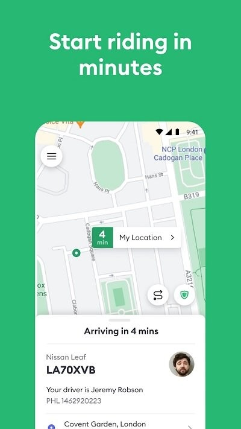

月底报销卡壳的那半小时，我翻出了每一张打车票
商务出差回国后发票对不上账，抱着试试看的心态打开 Bolt 的行程记录，发现每一单都被完整存着——起终点、路线图、甚至司机绕路多收的那三块欧元，一笔不差。
上月底我坐在财务部小姑娘旁边，屏幕上摊着三张发票和四行 Excel。那趟阿姆斯特丹出差共打了七次 Bolt，出发前从下载拿到安装包时顺便注册绑了卡，回国前随手截了几张图，自以为能糊过去。结果小姑娘拿着发票号码在系统里一查，摇头说差了两单。
我当时心里咯噔一下——欧洲出差的发票如果丢了，补打流程比国内麻烦得多，公司报销窗口又只剩最后三天。旁边同事凑过来递了个建议："你用 Bolt 那个行程记录页查过吗？每一单都在的，比你自己截图全多了。"
说实话我之前对这个功能没太在意。Bolt 是一款主打欧洲市场的叫车应用，从官网到实际使用，我也是那趟出差前才第一次完整接触，之前完全没研究过它的完整功能。总觉得打车就是到站付款，行程结束就算完了。那天抱着死马当活马医的心态点开应用的主菜单，找到了那个叫 Activity 的入口。
点进去的瞬间有点意外——七次行程按时间倒序整整齐齐排在那里，每一行都是一个可点击的卡片。我点进最早那单从史基浦机场到酒店的，展开后居然有完整的详情：日期时间精确到分钟，起终点和实际路线在地图上画了出来，下面是车型档位、计价明细和最终支付的金额。连我当时选的是 UberX 还是商务舱都记得一清二楚。
最让我吃惊的是，那单里还有一项我之前没注意到的等待费。当时飞机晚点，我在到达层多等了十二分钟才走出来，司机其实已经到了。免费等待期过后系统自动开始计时，那十二分钟折算成了三欧元多一点的等待费用。我当时以为那司机故意绕路，看了路线图才发现他老老实实停在约定位置没动——这笔钱是系统按规则收的，不是司机的问题。

顺着这个思路我往下翻，每一单都点开核对。果然，差的那两单不是没打发票，而是我截图时漏掉了——都是晚上从客户那边回酒店的短途，金额不大，当时觉得没必要留底。Activity 页里不仅有这两单的完整记录，还能直接取收据——点进详情页往下滑，就有一个下载凭证的入口，PDF 格式的发票带着完整的行程明细和支付金额，跟我手里那几张一模一样。
折腾了不到十分钟，七张收据凑齐了。财务部小姑娘扫了一眼就过了，比我自己截图的清晰度高得多。
那之后我对这个功能多留了个心眼。后来又翻了一下行程里的实时跟踪页——原来每次打车时，地图上显示的不仅是车辆的实时位置和预计到达时间，整个行程数据从上车到下车都在后台被记录着。翻了文档才注意到，官方安全说明里其实写了这一点，只是平时很少有人注意。
再过一周遇到一次金额争议。从鹿特丹中央车站到展馆那单，导航显示的距离和实际扣费差了四欧元。我当时第一反应也是司机绕路了。但这次我没急着差评，先打开 Activity 找那单的路线图，画得明明白白——导航系统临时改了一条主干道避开交通事故，不是司机故意绕远。我把手机递给司机看了一眼，他耸耸肩，说这是系统的决定。
这件事让我对评分这个功能也多了些分寸。之前总觉得给司机打星是乘客的权力，想打就打。现在才知道，司机的评分是多维计算的，包括乘客打星、投诉记录和驾驶档案，反复收到低分会被封禁。官方的说法是评分用来审查司机行为，其实每一次打分都在影响车队的优胜劣汰——不是走过场的形式主义。反过来司机也会给乘客打分，长期低分的人叫车会变难，礼貌沟通本身就是在维持自己的乘客信用。
还有个小发现是关于账户余额的。那次取消费争议，平台最终退了一笔金额回来，默认是回到 Bolt Balance 里。我本来以为要手动选"用余额支付"才能抵扣车费，结果下一单结算时发现它自动生效了——有余额时系统会自动用于抵扣，不需要我做任何操作。唯一的例外是预约用车的付款方式里不能选余额，预约单还是要绑一张卡做担保，但余额照样在后台帮你冲抵。这个细节没注意过的话，等于每单都在白白留着余额不用。
从那趟出差之后我养成了个习惯：每次打完车不管金额大小，都去 Activity 里瞄一眼。不是怕司机乱来，是这个完整的记录对自己来说也是一份有用的旅行日志——哪天在哪打了车、多少钱、什么路况，全在那里。月底对账或者报销时再也不用翻截图翻到眼瞎了。
现在回头想，Bolt 的价值远不止叫车方便这么简单。官方网站上对这些功能其实都有说明，只是平时很少有人专门去看。如果你也常出差、也有报销烦恼，不妨自己去翻一下。关于这些功能的整理和补充说明，我也同步放在了三个仓库里——GitHub 上的版本最及时，Gitee 对国内访问更友好，GitCode 作为额外备份也一起维护着。